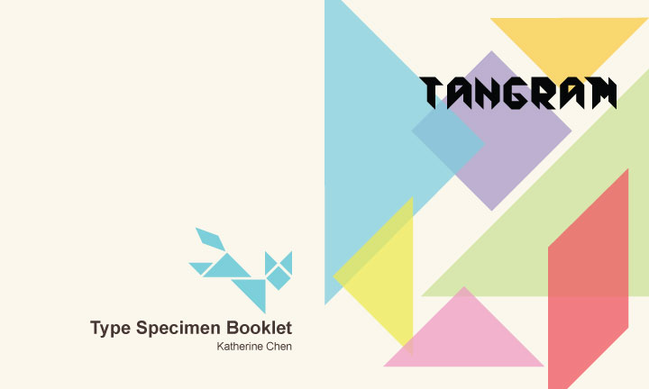
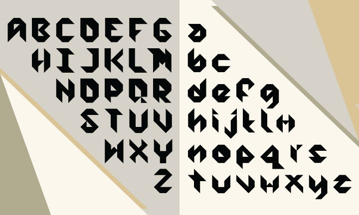
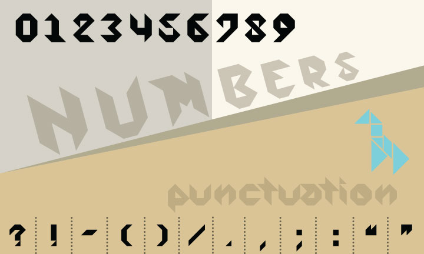
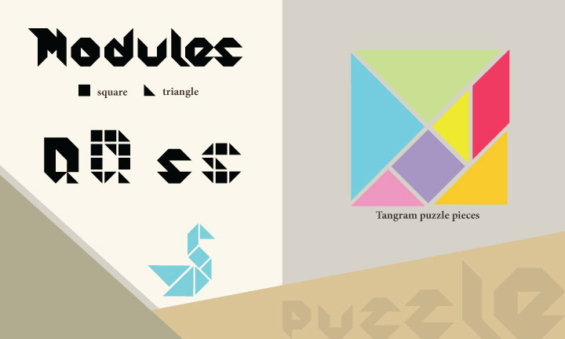
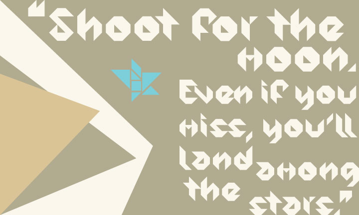
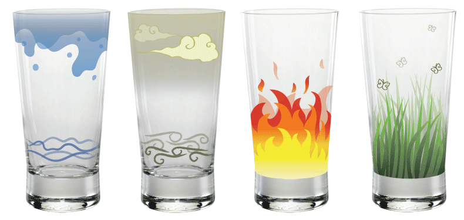
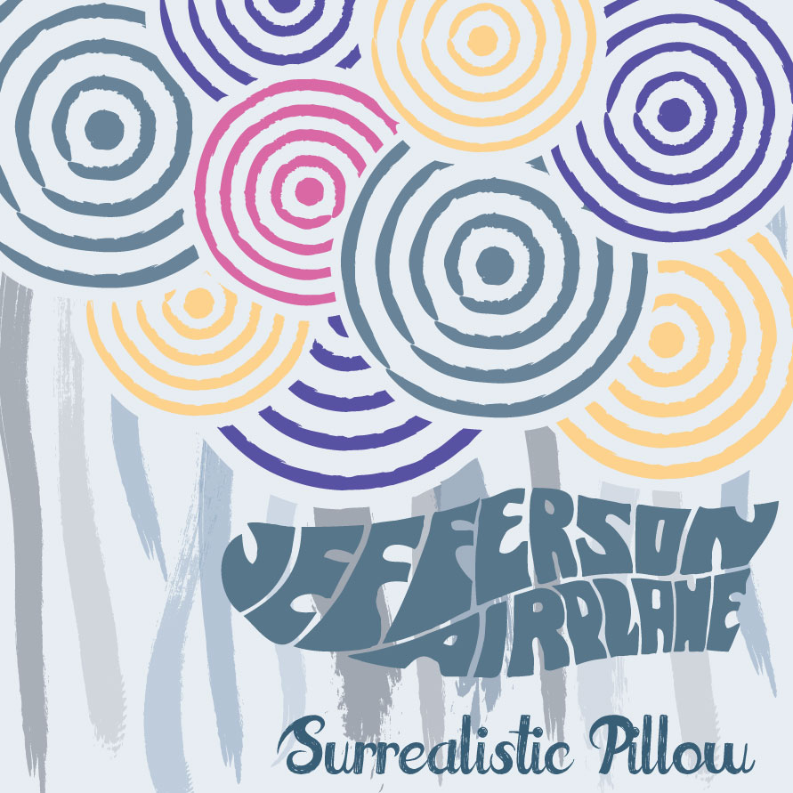
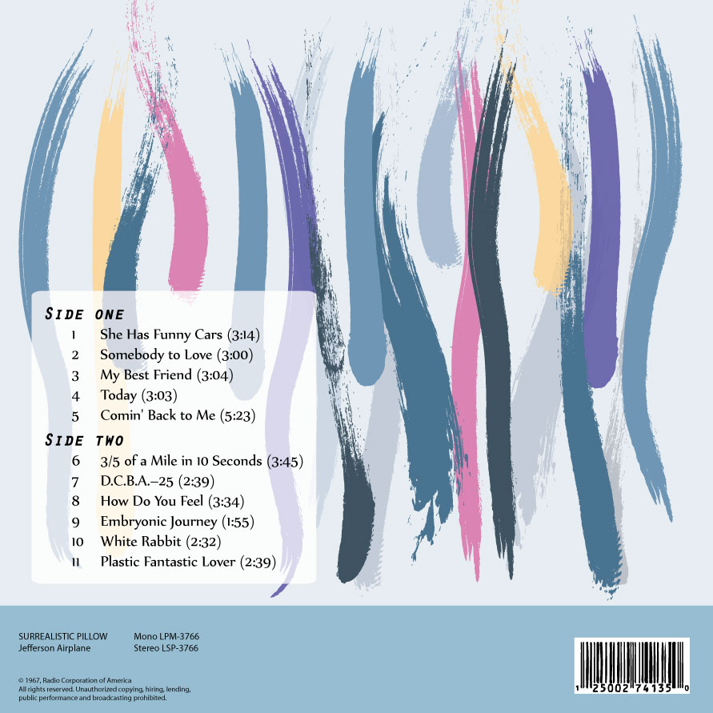
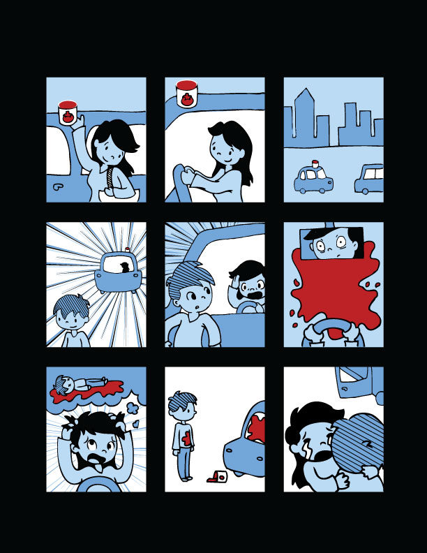

Type Specimen Book





For my Typography & Letterform class' final project, we had to create our own modular typeface which included a full alphabet as well as a set of numbers and punctuation. My typeface is named and based after the tangram puzzle, in which 7 geometric shapes are placed together to create different images.
This project underwent a long process of designing the typeface to creating a typeface poster using a pronto plate and printing press. Finally, we were to create a Type Specimen Book to showcase the typeface (the images shown above are a few pages from my specimen book).
It was a fun project that I really enjoyed because we leanred how to use the printing press and do some bookbinding in the process. Most of all, it tied together all the concepts we learned throughout the semester while giving us the flexibility to see what we could do with the skills we had acquired.
Cup Design

Another assignment from Licensed Image (this class was heavily focused on designing for things that could be used or sold as practical products).
This project involved designing various types of dinnerware that worked as a set. I chose to work on a set of cups, which I have designed according to the basic elements of water, wind, fire, and earth.
Album Cover


The album cover assignment was from my Communication Design I class. Each student picked a specific band album from a hat (so selections are random!) and were to re-design the cover of the album. Back before digital music downloads became mainstream, album designs were a way for the artist to convey more about themselves and the music. Some say that the album design was just as important as the music!
I picked the album "Surrealistic Pillow" by Jefferson Airplane, which is a popular band from the 60s. In my design, I hoped to capture the dreamy, influenced state of mind that the band members and its fans were often in, and the associations from that time period.
A Short Comic Event

A recent project from my Pictures for Communication class. We were to create a short narrative that could be told in 9 comic panels without text.
Like the Pictograms project, it is an assignment that sounds a lot easier than it actually is. To communicate the story effectively and quickly, it was crucial to understand which elements were important to the telling and reading of the story. What design elements were useful and necessary? How do you simplify the design so that the story is clear? Everyone's comics underwent a dramatic overhaul to achieve these goals.